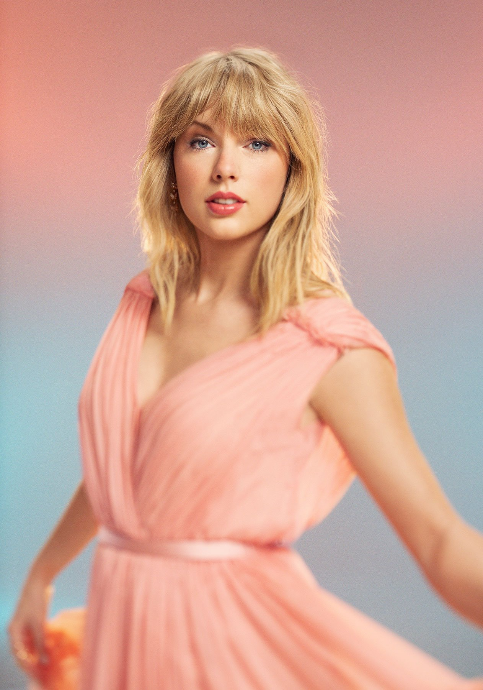

Taylor Swift

Artist Of The Decade
Taylor Alison Swift (born December 13, 1989) is an American singer-songwriter. Her narrative songwriting, which is often inspired by her personal life, has received widespread media coverage and critical praise. Born in West Reading, Pennsylvania, Swift relocated to Nashville, Tennessee, at the age of 14 to pursue a career in country music. She signed a songwriting deal with Sony/ATV Music Publishing in 2004 and a recording deal with Big Machine Records in 2005, and released her eponymous debut studio album in 2006.
She explored country pop on her second and third studio albums, Fearless (2008) and Speak Now (2010). The success of the former's singles "Love Story" and "You Belong with Me" on both country and pop radio established Swift as a leading crossover artist. She experimented further with pop, rock, and electronic genres on her fourth studio album, Red (2012). Her fifth, the synth-pop album 1989 (2014), effectively transformed her status from country songstress to pop star, supported by the Billboard Hot 100 number-one singles "Shake It Off", "Blank Space", and "Bad Blood". The media scrutiny on her personal life that followed largely inspired Swift's sixth studio album, Reputation (2017), which delved into urban sounds.
Parting ways with Big Machine to sign with Republic Records in 2018, a move that sparked controversy over the ownership of her masters, Swift released her seventh studio album, Lover, in 2019. After consistent commercial success in the 2010s, Swift ventured into indie folk and alternative rock on her eighth and ninth studio albums, Folklore and Evermore (2020). Her lyricism on the two albums, inspired by escapism during the COVID-19 pandemic, earned acclaim for its nuanced storytelling. Besides music, Swift has played various supportive acting roles in films such as Valentine's Day (2010) and Cats (2019). She also released the autobiographical documentary Miss Americana and the self-directed concert special Folklore: The Long Pond Studio Sessions in 2020.
Having sold over 200 million records worldwide, Swift is one of the best-selling music artists of all time. Her accolades include 11 Grammy Awards (including three Album of the Year wins), an Emmy Award, 12 Country Music Association Awards, 25 Billboard Music Awards (the most wins for a female artist), 32 American Music Awards (the most wins for an artist) and 49 Guinness World Records. She featured on Rolling Stone's 100 Greatest Songwriters of All Time (2015), placed eighth on Billboard's Greatest of All Time Artists list (2019), and appeared multiple times on power rankings such as the Time 100 and the Forbes Celebrity 100. Named the Woman of the 2010s Decade by Billboard and the Artist of the 2010s Decade by the American Music Awards, Swift has been recognized for her advocacy of artists' rights and women's empowerment in the music industry.